@CBSNews
📝 原文: President Trump "not satisfied" with new peace deal offered by Iran as standoff's costs multiply.
🇨🇳 译文: 随着僵局成本成倍增加，特朗普总统对伊朗提出的新和平协议“不满意”。

🕒 2026-05-01T18:44:52+00:00
| 来源 | 旧窗口内数量 | 本次新增 | 本次淘汰 | 当前窗口内共有 |
|---|---|---|---|---|
| 推文 + Dawn 新闻 | 0 | 37 | 0 | 37 |
| ARY News | 0 | 0 | 0 | 0 |
注：淘汰数 = 旧窗口内数量 + 本次新增 - 当前窗口内共有
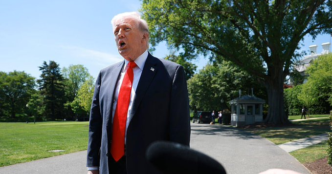


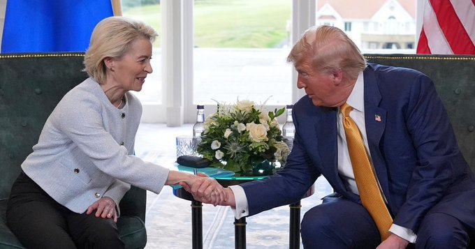

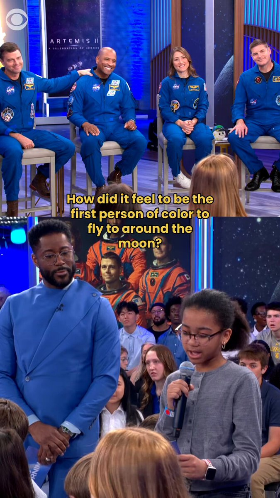
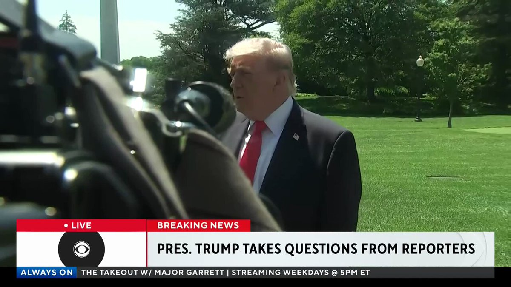
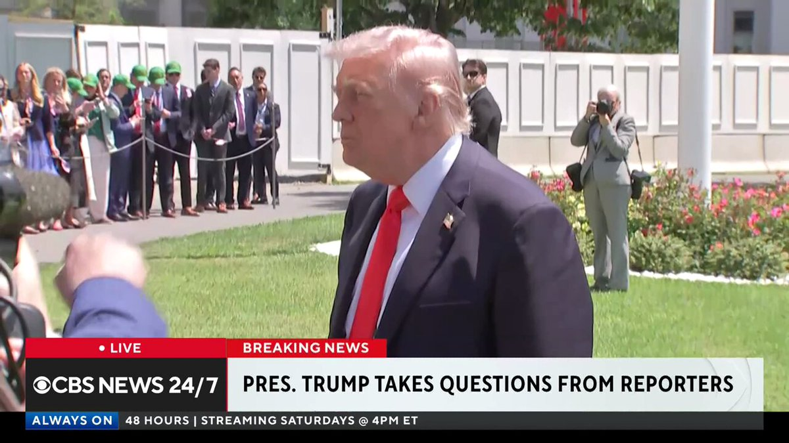
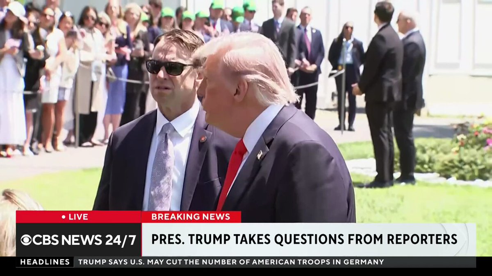
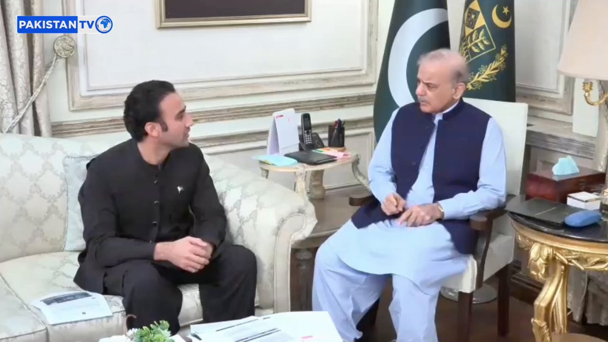
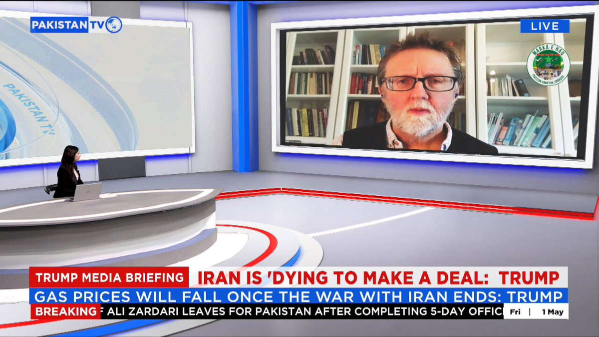

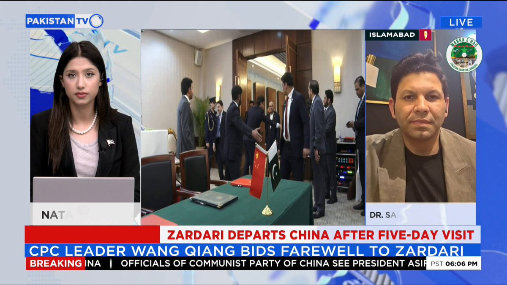


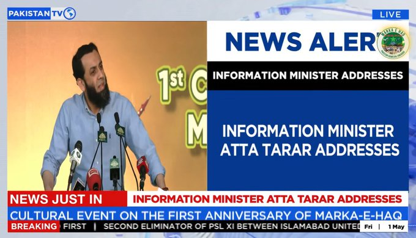
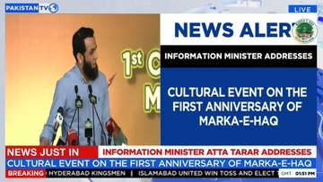
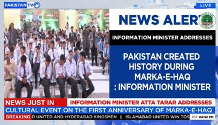


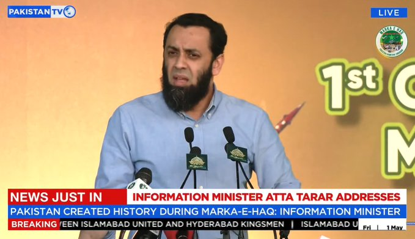


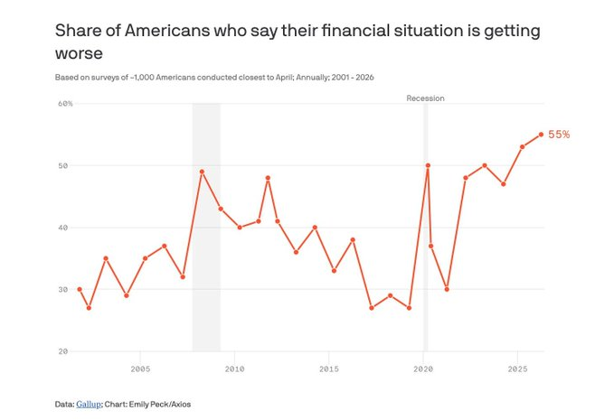
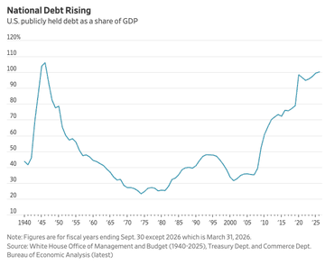
暂无文章。